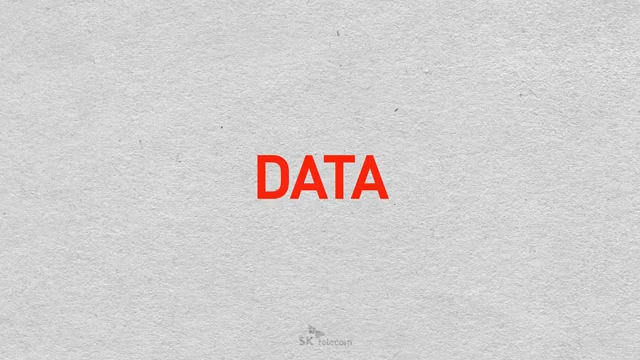

현장 열기를 그대로.. 화려한 개막식과 주요 세션 강의를 라이브로 시청 하실 수 있습니다.
새로운 IoT 통신 기술과 현황을 살펴보고, IoT 전용망 등장으로 인해 촉발되는 다양한 산업에서의 Digital Transformation 활용사례 및 기대 효과를 공유합니다. 또한, Global Top 수준의 IoT 서비스 품질을 제공하기 위한 당사의 차별화된 IoT기술과 향후 발전 방향을 제시합니다.
기업의 데이터 활용도를 평가할 수 있는 데이터 지능에 대한 컨셉 및 이를 뒷받침하는 구체적인 사례를 소개하고, 이를 기반으로 한 기업의 Digital Transformation 전략 수립의 프레임워크를 제안합니다.
왓슨, 시리, 알파고, 자율주행차, AI 로봇 등 최근 빠르게 발전하고 있는 딥러닝 인공지능 기술과 산업 동향을 살펴보고, IoT, 5G 기반 초연결 데이터 시대에 글로벌 가치와 신산업 창출을 위한 인공지능 Digital Innovation 전략을 제시합니다.
※ 상기 일정은 내부사정에 의해 조정될 수 있습니다.